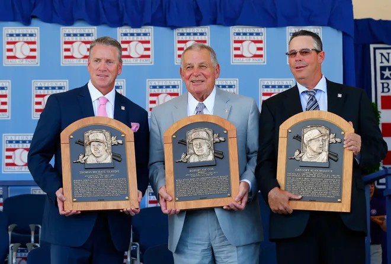

The Atlanta Braves have had seven players, one manager, and one executive inducted into the National Baseball Hall of Fame.

| Player | Position | Year Inducted |
|---|---|---|
| Andruw Jones | Center Fielder | Class of 2026 |
| Fred McGriff | 1st Baseman | Class of 2023 |
| Chipper Jones | 3rd Baseman | Class of 2018 |
| John Schuerholz | Executive | Class of 2017 |
| John Smoltz | Pitcher | Class of 2015 |
| Greg Maddux | Pitcher | Class of 2014 |
| Tom Glavine | Pitcher | Class of 2014 |
| Bobby Cox | Manager | Class of 2014 |
| Phil Niekro | Pitcher | Class of 1997 |
Explore the official Baseball Hall of Fame website.